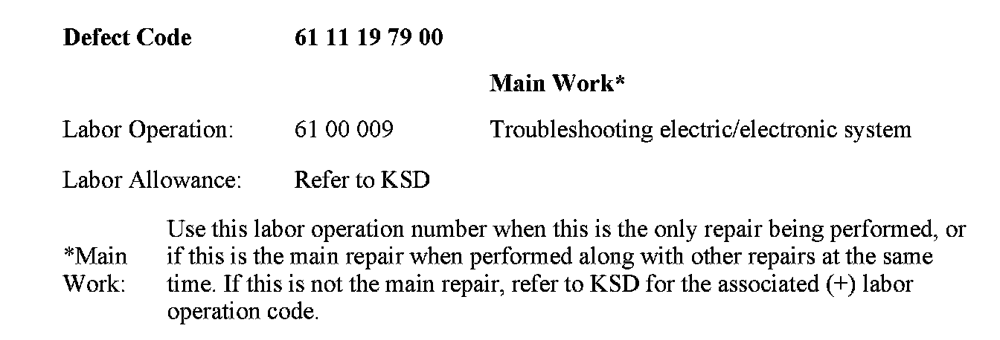

Computers/Controls - Diagnosis via D-CAN Not Possible
SI B 07 15 07Workshop Environment Systems
January 2008
Technical Service
SUBJECT
Diagnosis via D-CAN Not Possible
MODEL
E90, E91, E92, E93 (3 Series) produced from 9/07
E60, E61 (5 Series) produced from 3/07
E63, E64 (6 Series) produced from 3/07
E83 (X3) produced from 9/06
E70 (X5)
SITUATION
When performing diagnosis on a vehicle, the GT1/DISPlus is not able to communicate with the vehicle. The message "Connect diagnostic connector and switch on ignition (Terminal 15)!" is displayed.
CAUSE
^ Faulty OBD cable
^ Faulty Head
^ Faulty LAN cable
^ D-CAN failure in vehicle.
PROCEDURE
Before diagnosing the D-CAN in the vehicle, try the diagnostic setup on another vehicle. If the communication cannot be established on the other vehicle, swap the OBD cable, the head and the LAN cable one at a time to isolate the problem. If diagnosis operates normally on the other vehicle, continue to the next step.
1. Disconnect the BMW Battery charger (if connected).
2. Disconnect the battery.
3. Check the resistance of the D-CAN circuit across OBD socket Pin 6 (D_CAN_H) and Pin 14 (D_CAN_L). A good operational D-CAN measures 60 ohms. The D-CAN circuit is fitted with two 120 ohm terminal resistors. One is fitted in the wiring near the OBD socket. The second is fitted in the gateway module of the vehicle (JBE, KGM or DME [E83 only]).
4. If the resistance reading is Zero ohms, the D-Can wires are shorted together. Check the circuit for shorts as per the wiring diagram.
5. If the resistance reading is Mega ohms, the D-Can wiring has an open circuit. Check the circuit for opens as per the wiring diagram.
6. If the resistance reading is 120 ohms, one of the fitted terminal resistors is faulty. Check the resistance of both resistors for an open circuit and replace as necessary.

WARRANTY INFORMATION

Disclaimer